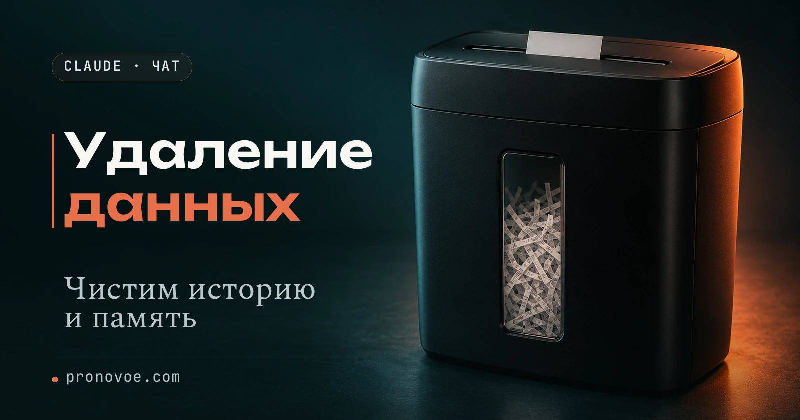
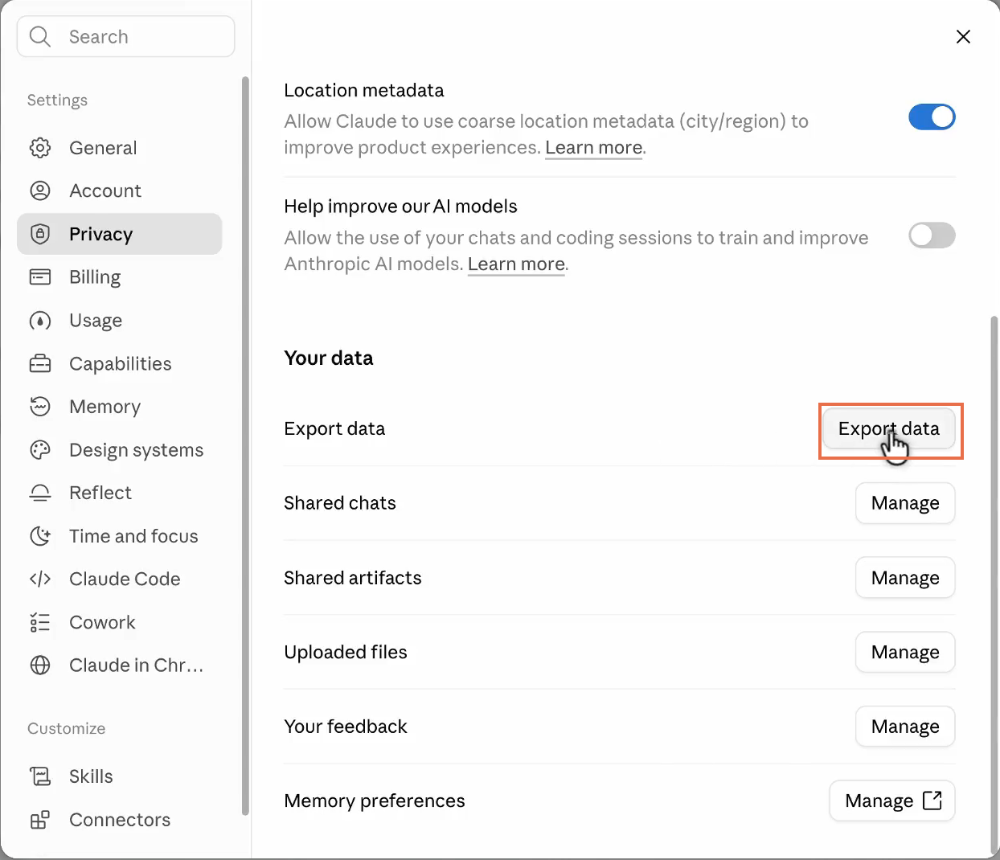
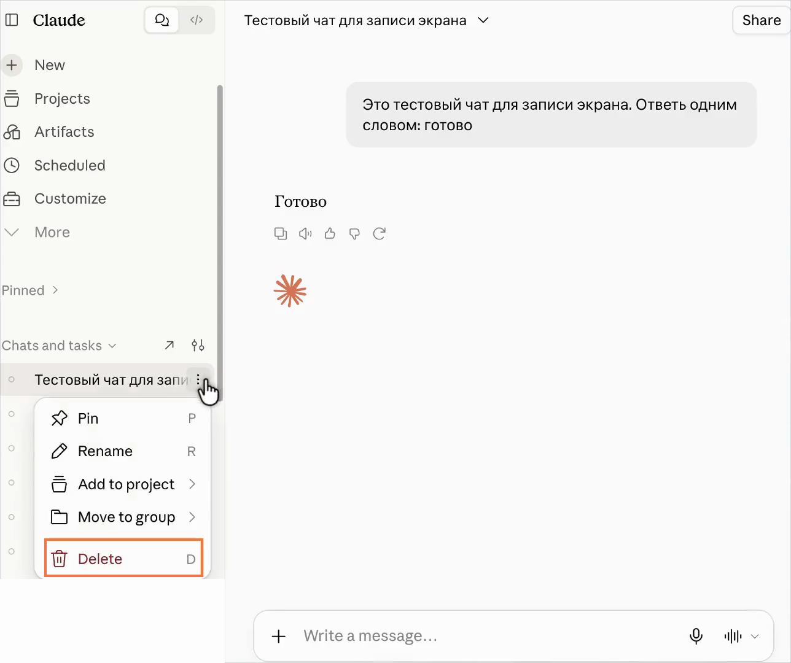
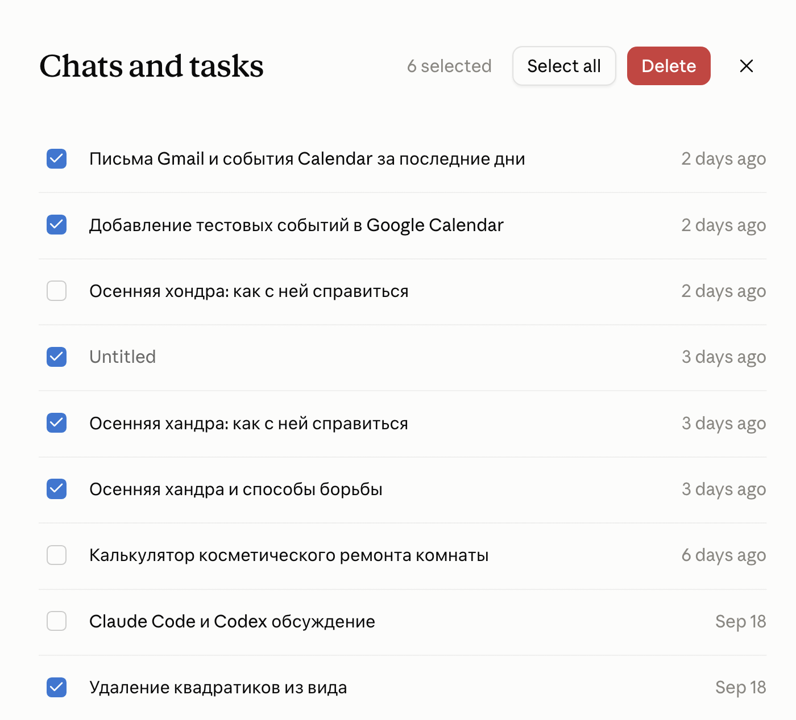
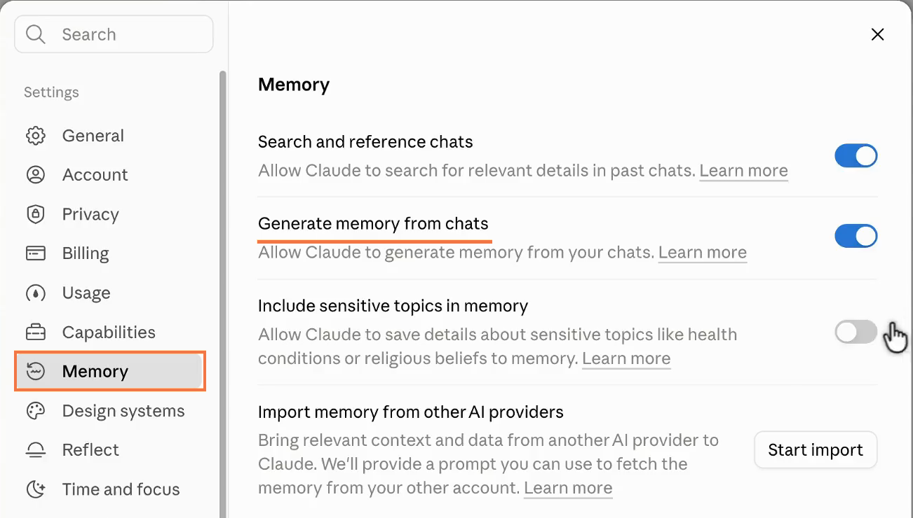
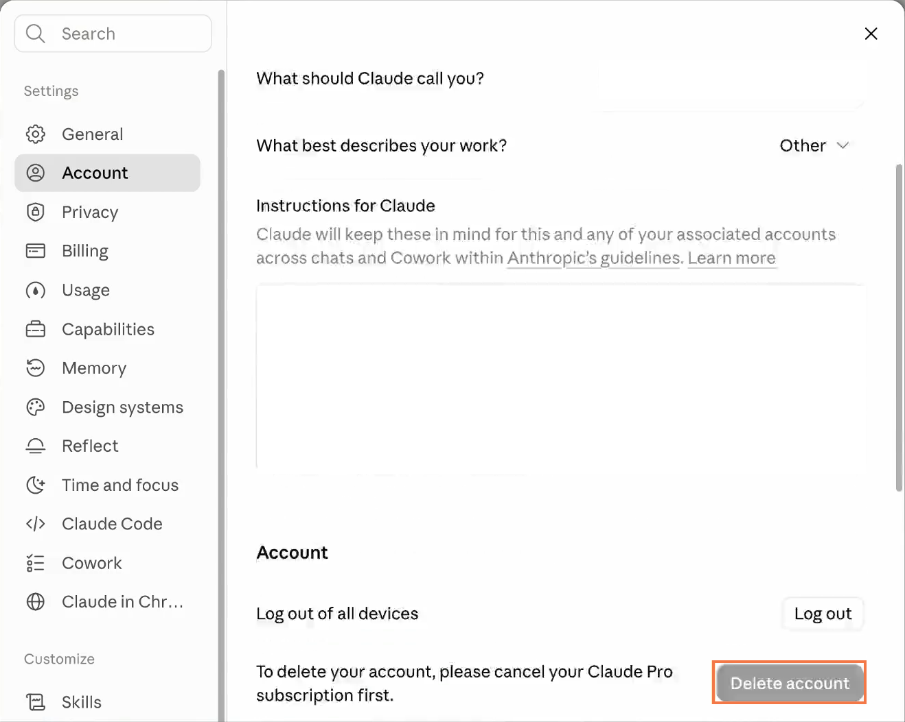

CLAUDE.AI · ЧАТЫ, ПАМЯТЬ, АККАУНТ

Удаление данных в Claude
Начальный уровень
Ты удаляешь из истории Claude чат с чувствительными деталями о себе или работе, чтобы они больше не всплывали. Но позже Claude может снова упомянуть одну из них в новом разговоре: она могла сохраниться в памяти. Ниже покажу, как убрать такие сведения и при этом не потерять переписки, которые захочешь перечитать
Содержание статьи
Удаление данных в Claude: сначала сохрани нужные перепискиКак удалить чаты из истории ClaudeУдаление чувствительных сведений из памяти ClaudeЗакрытие аккаунта ClaudeЧто именно удаляется после каждого шагаОфициальные источникиУдаление данных в Claude: сначала сохрани нужные переписки
Если позже захочешь перечитать разговор или найти в нём ответ Claude, сохрани копию до удаления. В приложении Claude на iPhone и Android запросить архив нельзя. Открой Claude на компьютере в браузере или приложении Claude Desktop, нажми свои инициалы в левом нижнем углу и перейди в Settings → Privacy. В блоке Your data нажми Export data

Когда архив будет готов, Claude пришлёт письмо со ссылкой на почту твоего аккаунта. Открой письмо и перейди по ссылке: отдельную кнопку в Claude искать не нужно. Для скачивания нужно быть в том же аккаунте Claude, из которого был запрошен экспорт. Ссылка работает 24 часа после того, как пришло письмо. Скачанный файл ищи в папке загрузок браузера, обычно она называется «Загрузки». Открой архив и убедись, что нужные разговоры сохранились, прежде чем удалять их из Claude
Результат: у тебя есть копия переписок. Сам запрос экспорта ничего не удаляет, а скачанный архив нельзя импортировать в другой личный аккаунт Claude
На личных тарифах экспорт запрашивает владелец аккаунта. Для Team и Enterprise выгрузка данных организации доступна Primary Owner
Как удалить чаты из истории Claude
Удаление одного чата
Найди разговор в левой колонке Claude, наведи указатель на его название и нажми ⋮. Выбери Delete, затем ещё раз нажми Delete в окне подтверждения

Удаление нескольких чатов сразу
Открой Chats and tasks в левой колонке. Наведи указатель на первый чат, нажми ⋮ → Select и отметь галочками остальные чаты, которые хочешь удалить. Перед подтверждением посмотри на галочки и названия: среди выделенных не должно быть разговора, который ты собираешься оставить. Затем нажми красную кнопку Delete вверху страницы и ещё раз Delete в окне подтверждения

Результат: выбранные чаты исчезают из истории сразу. По данным Anthropic, их удаление из внутренних систем может занять до 30 дней. Сведения, которые Claude успел сохранить в памяти, удаляются отдельно
Удаление чувствительных сведений из памяти Claude
После удаления чатов открой Settings → Memory. Здесь две разные настройки: Search and reference chats разрешает Claude искать сведения в прошлых разговорах, а Generate memory from chats создаёт отдельные записи памяти. Удаление чата из истории не удаляет факты, которые уже попали в память
Ниже есть переключатель Include sensitive topics in memory. Выключи его, и Claude не будет сохранять в память темы вроде здоровья или убеждений

Если ниже виден список Topics, найди тему с чувствительной деталью, которую хочешь убрать, открой её и нажми Delete. Если хочешь удалить всю сохранённую память, нажми переключатель Generate memory from chats и выбери Reset memory
Перед Reset memory: это действие необратимо и удаляет также память проектов. Если хочешь удалить только одну чувствительную деталь, сначала ищи её в Topics
Pause memory не удаляет прежние записи. Этот вариант лишь приостанавливает использование памяти и создание новых записей
Результат: после удаления темы Claude больше не хранит выбранную запись памяти. После Reset memory он начинает собирать память заново, если ты снова включишь эту функцию
Закрытие аккаунта Claude
Если ты хочешь закрыть учётную запись целиком, сначала скачай архив с нужными разговорами. Удаление аккаунта необратимо: после него ты потеряешь доступ к чатам, проектам и другим сохранённым данным
Открой Settings → Account и найди внизу кнопку Delete account. На скрине она неактивна, потому что в этом аккаунте действует подписка Pro. Если у тебя Pro или Max, сначала открой Settings → Billing, отмени подписку и дождись конца оплаченного периода. После этого вернись в Account, нажми Delete account и следуй шагам подтверждения

Результат: после подтверждения аккаунт удаляется, а войти в него и восстановить переписки уже нельзя
Что именно удаляется после каждого шага
Если ты хочешь убрать из Claude чувствительную деталь, начни с разговора, где она появилась, а затем проверь память. Если хочешь закрыть аккаунт, сначала сохрани архив: после удаления вернуть переписку уже не получится
Официальные источники
Лишнее удалено. Что теперь доверить Claude?
Инструкция пройдена. А как сделать, чтобы нейросети приводили клиентов?
Концентрат - онлайн-мероприятие Ивана Сергеева по вайбмаркетингу: 13-15 октября, 19:00 по Москве. Участие бесплатное, регистрация на сайте до 14 октября
ЗарегистрироватьсяРеклама. ИП Сергеев И. С., ИНН 352511695540. erid: 2VtzqviiWtm
Материал подготовлен по интерфейсу Claude и справке Anthropic на 28 сентября 2026 года